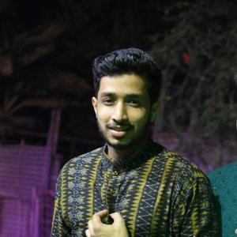
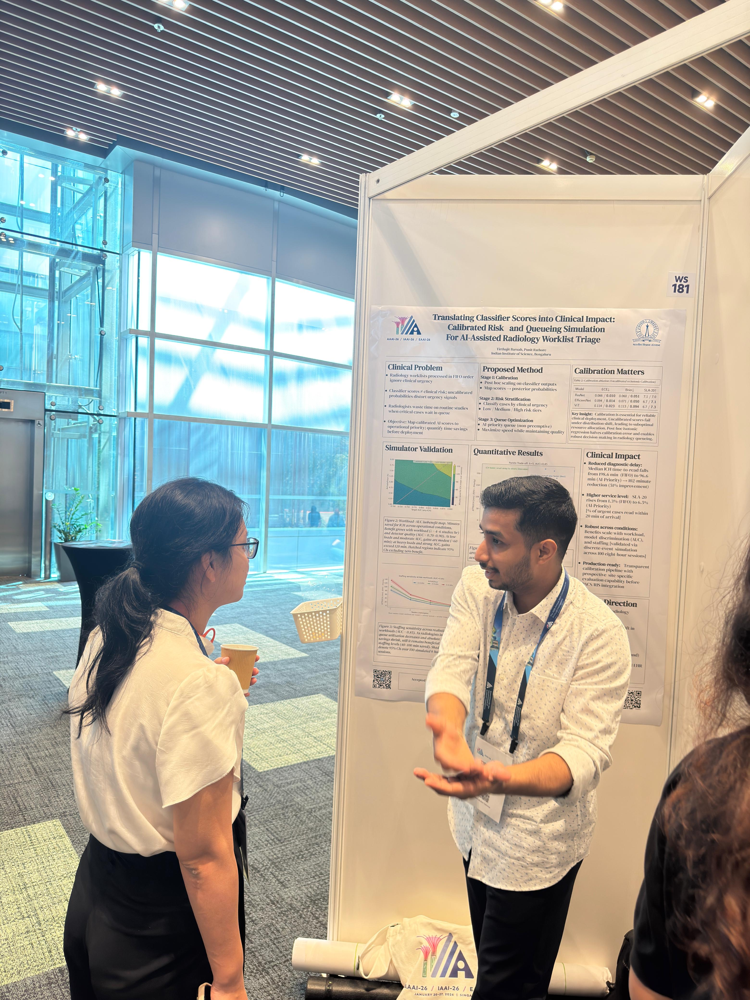
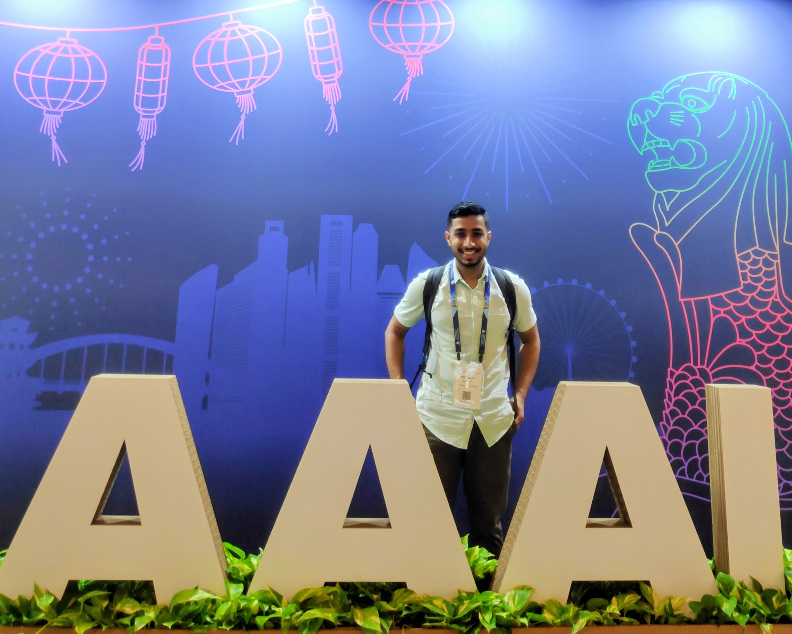

Data-efficient medical imaging AI
Learning useful representations from limited, noisy, or unlabeled clinical imaging data.
PhD Researcher · IISc Bengaluru
Reliable and data-efficient AI for medical imaging, representation learning, and healthcare workflows.
Latest: Two-Fold Patch Perturbation accepted at IJCAI-ECAI 2026.

I am a PhD student in the Department of Cyber-Physical Systems at the Indian Institute of Science, Bengaluru, advised by Dr. Punit Rathore. My research focuses on reliable and data-efficient AI for healthcare, with a particular interest in medical imaging, self-supervised learning, representation learning, calibrated risk estimation, and deployment-aware evaluation.
I am interested in learning from challenging clinical data settings where labels are limited, expensive, noisy, or unavailable. My recent work spans self-supervised learning for 3D medical imaging, deterministic autoencoders for structured latent representations, cluster assessment for image datasets, and AI-assisted radiology worklist triage using calibrated risk and queueing simulation.
Before joining IISc, I completed a BS-MS in Electrical Engineering and Computer Science with a minor in Data Science and Engineering at IISER Bhopal.
Learning useful representations from limited, noisy, or unlabeled clinical imaging data.
Designing learning objectives, perturbations, and latent structures for robust medical image understanding.
Studying calibration, uncertainty, risk estimation, and evaluation methods for AI systems used in healthcare settings.
Translating model scores into workflow-level impact through calibrated risk estimates and queueing simulation.
Developing patch-perturbation based self-supervised learning methods for 3D medical imaging, with emphasis on label-efficient representation learning.
Keywords: medical imaging, 3D SSL, representation learning, limited labels.
Translating classifier scores into calibrated risk estimates and simulating their downstream effect on radiology worklist prioritization.
Keywords: calibration, queueing simulation, radiology AI, clinical workflow.
Studying deterministic autoencoder architectures that induce structured low-rank latent spaces for classification, clustering, and generative tasks.
Exploring augmentation strategies and self-supervised time-series representation learning for large-scale EHR datasets.
Datasets: MIMIC-III, PhysioNet 2012.
Dates indicate the period of collaboration or mentorship with me. Affiliations refer to current or most recent affiliations.
Work: 3D self-supervised learning for medical imaging.
Project: Novel perturbation strategy for 3D medical self-supervised learning.
Outcome: IJCAI-ECAI 2026 main conference publication.
Projects: Medical multi-modal fusion and cross-modal alignment; test-time adaptation for optical flow.
Outcome: Summer internship report.
Internship Report | Project Codebase | Homepage | Google Scholar | GitHub
Selected photos from conference presentations, research meetings, and academic events.


Short notes on medical imaging, self-supervised learning, healthcare AI, and research workflows.
A short technical note on why self-supervised learning is useful in medical imaging and what makes 3D clinical data challenging.
A note on calibration, risk estimation, and queueing simulation for radiology worklist prioritization.
Outside research, I have been involved in athletics, martial arts, football, swimming, and music. I served as Coordinator of the Karate Club at IISER Bhopal, won a gold medal in the 4×100m relay at the Inter-IISER Sports Meet, and trained in tabla for five years.
Email: tirthajitb@iisc.ac.in
GitHub | Google Scholar | ORCID | OpenReview | LinkedIn